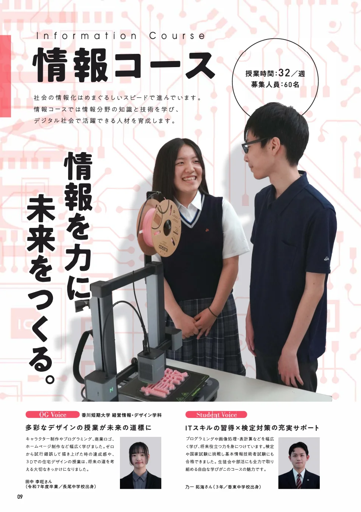
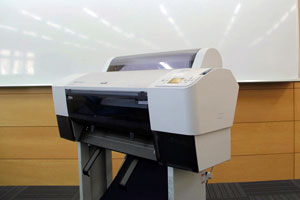

PhotoshopとIllustrator
画像編集と図形・文字のレイアウトに使う両ソフトを、授業の制作環境で利用できます。
環境と成果
Adobe Creative Cloud、Microsoft Office、Visual Studio、3Dプリンターを使い、学校と自宅で制作や開発を続けられます。
画像編集と図形・文字のレイアウトに使う両ソフトを、授業の制作環境で利用できます。
Word、Excel、PowerPointなどを使い、文書、表計算、発表資料の作成へ取り組みます。
西館マルチメディア教室の更新に合わせ、プログラミング用ソフトとしてVisual Studioを導入しました。

